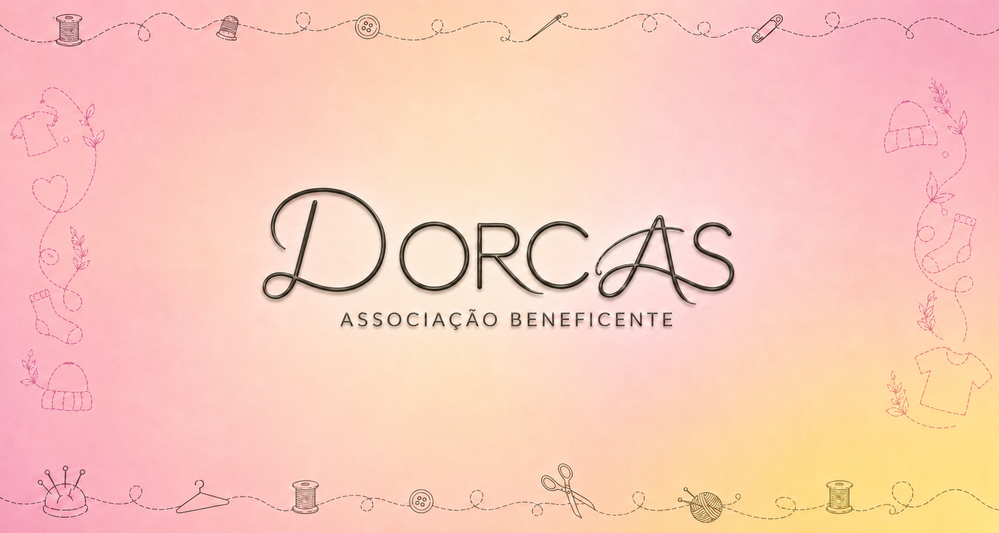
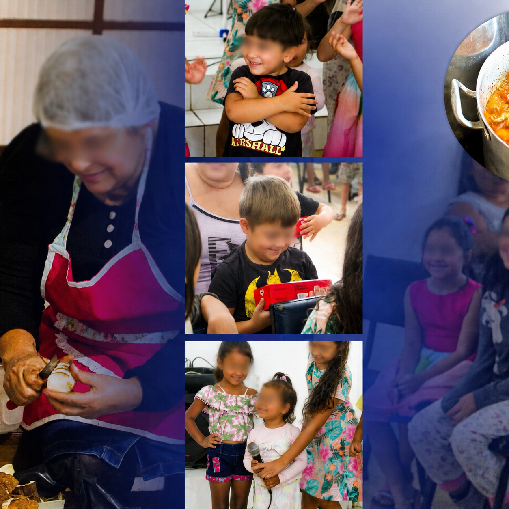
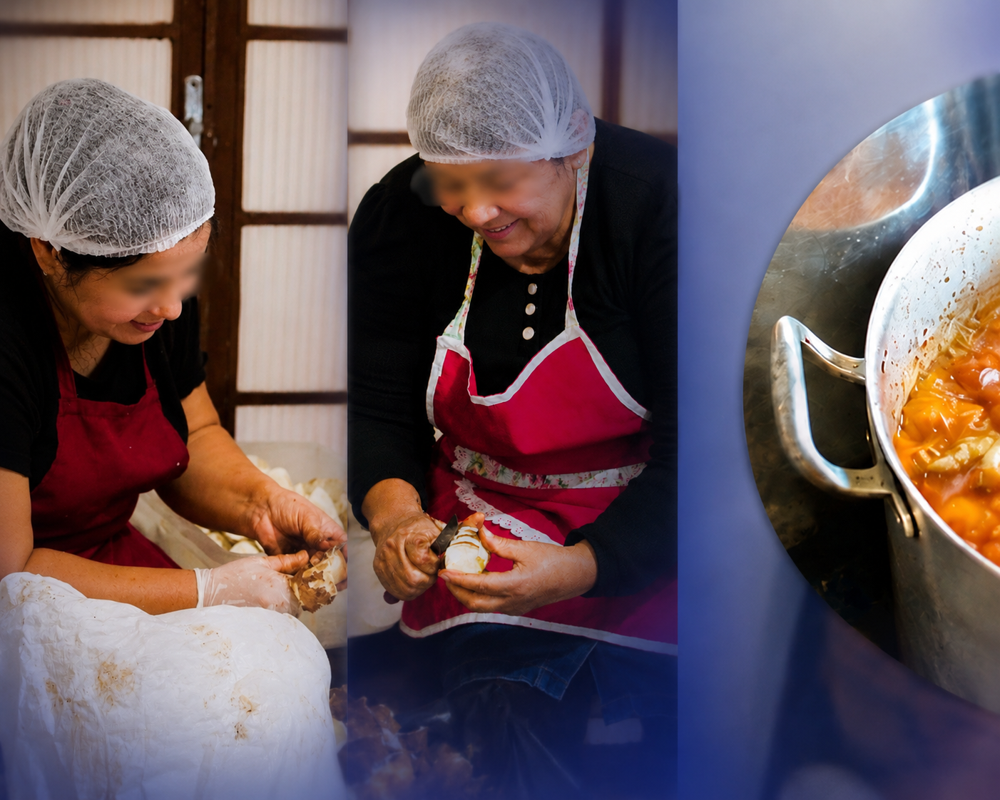
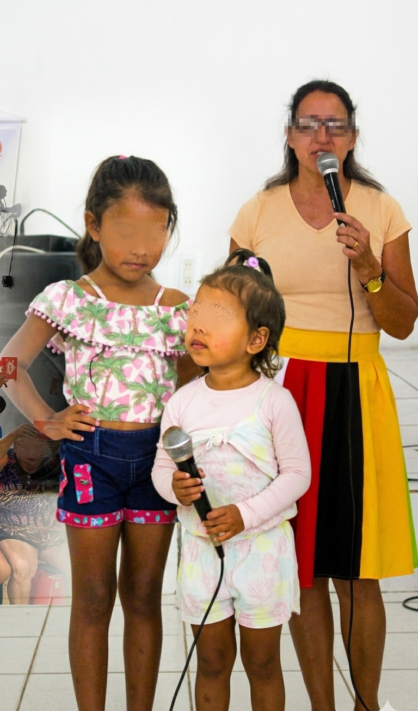
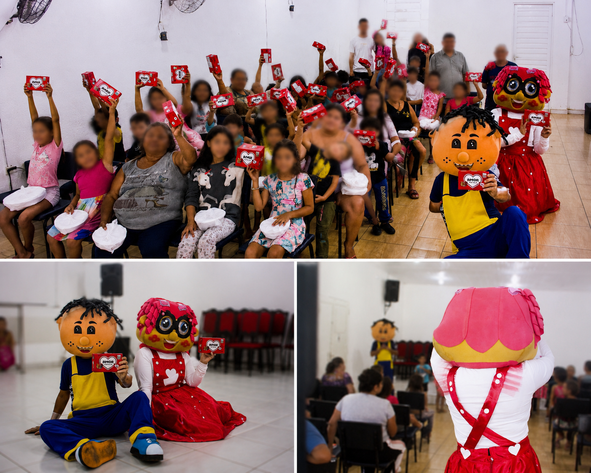
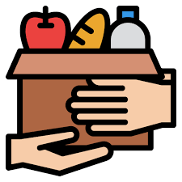

Quem Somos
"Inspirados por Dorcas, de acordo com a Bíblia, em Atos 9:36 – uma mulher que estava cheia de boas obras e ofertas voluntárias que distribuía a quem precisava – a Ação Beneficente DORCAS nasceu para levar acolhimento e momentos de alegria a crianças ou famílias em situação psicossocial e economicamente vulneráveis. Acreditamos que uma refeição quente e um sorriso podem transformar um dia e construir um futuro melhor."

Nossos Projetos
🍽️ Todos os sábados pela manhã, a Associação Beneficente Dorcas se torna um lugar de amor, cuidado e esperança para muitas crianças.
Mais do que oferecer alimento, esse projeto leva carinho, atenção e a mensagem de que Deus nunca abandona os Seus filhos. 🙌✨
Cada sorriso, cada abraço e cada gesto de solidariedade refletem o amor de Cristo em ação. Porque servir ao próximo também é uma forma de pregar o Evangelho. 💛
“Em verdade vos digo que, quando o fizestes a um destes meus pequeninos irmãos, a mim o fizestes.” — Mateus 25:40 📖
Seguimos firmes nessa missão, acreditando que pequenos gestos podem transformar vidas! 🤝✨

🍲 Comida Pronta e Nutritiva
Distribuição de refeições equilibradas e preparadas com muito carinho.

📚 Entretenimento e Educação
Oficinas de arte, brincadeiras e ensino religioso e social para desenvolver talento e moralidade.

🎉 Festa da Alegria
Eventos semanais com brinquedos, música e lanche especial para as crianças.
Como Você Pode Ajudar
Doe tempo, talento ou recursos. Cada gesto faz a diferença.
Aqui, cada sorriso carrega esperança, cada prato servido é uma demonstração de amor, e cada cultinho infantil é uma semente plantada no coração dessas crianças tão preciosas. “Quem se compadece do pobre empresta ao Senhor, e Ele o recompensará.” (Provérbios 19:17) Você também pode fazer parte dessa obra! Contribua, participe, ore e ajude-nos a continuar levando alimento físico e espiritual todos os sábados. Juntos, podemos transformar vidas através do amor de Cristo!

🥫 Doação de Alimentos
🙋 Voluntariado
💰 Doação Financeira
Parceiros
Contato
Atendemos de portas abertas, todos os Sábados à partir das 11h!
Entre em contato para saber como ajudar ou agendar uma visita em outro horário
📞 clique aqui para falar no WhatsApp
✉️ associaçãodorcas2026@gmail.com
📍 Av. Hispânica, 215 - GuajuvirasCanoas - RS, 92425-648